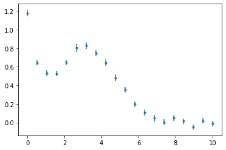
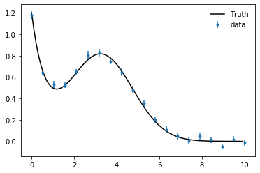

Basic fitting
Nonlinear fitting example
We'll use an artificial dataset to fit a model with 5 parameters,
It's the sum of a decaying exponential background, and a Gaussian peak.
We first load some standard packages, including scipy.optimize and lmfit for the nonlinear optimisation.
import os, sys
import numpy as np
from numpy import exp, pi, sqrt
from numpy import linspace
from scipy.optimize import leastsq
import pandas as pd
from matplotlib import pyplot
import scipy.optimize as optimization
# conda install -c conda-forge lmfit
from lmfit import minimize, Parameters
Loading and displaying the dataset
data = pd.read_csv("exppeak.txt", header=0, delim_whitespace=True)
# note: three ways to refer to a particular column
data.iloc[:,1]
data.loc[:,'x']
data.x
pyplot.errorbar(data.x, data.y, yerr=data.sigma, fmt='.')
<ErrorbarContainer object of 3 artists>

Defining the model and testing it
We now create a function that computes the predicted values for a given set of parameters b_1\dots,b_5:
def model_peak(x, b1, b2, b3, b4, b5):
return b1*exp(-b2*x) + b3/(b5*sqrt(2*np.pi))*exp(-0.5*(x-b4)**2 / b5**2)
We test it by superposing the prediction and the data (in this artificial example, we know the "true" parameters that were used to generate the dataset).
xx = np.arange(0,10,0.1)
truth = model_peak(xx, 1.12, 1.52, 3, 3.26, 1.48)
pyplot.errorbar(data.loc[:,'x'], data.loc[:,'y'], yerr=data.loc[:,'sigma'], fmt='.', label='data')
pyplot.plot(xx, truth, 'k', label='Truth')
pyplot.legend(loc='best')
<matplotlib.legend.Legend at 0x7fc1c856a990>

Simple nonlinear fitting with scipy.optimize.curve_fit
Perhaps the simplest interface for nonlinear fitting is the curve_fit function, which takes as arguments the model defined above, the data, and a set of initial guess parameters. The output of the function is the optimised parameters, and the covariance matrix for the fitted parameters:
import scipy.optimize as optimization
p0 = [1, 1, 1, 4, 1]
popt, pcov = optimization.curve_fit(model_peak, data.x, data.y, p0, data.sigma)
popt
array([1.08251862, 1.59378021, 3.11029724, 3.20655998, 1.55177204])
pcov
array([[ 0.00100275, -0.00034778, -0.00109506, 0.00055618, -0.00067476],
[-0.00034778, 0.01995825, 0.01065553, -0.00575757, 0.00480145],
[-0.00109506, 0.01065553, 0.00957323, -0.00355233, 0.00408678],
[ 0.00055618, -0.00575757, -0.00355233, 0.00289486, -0.00165942],
[-0.00067476, 0.00480145, 0.00408678, -0.00165942, 0.00249512]])
We can visualise the output to confirm that the fit is reasonable.
guess = model_peak(xx, *p0)
fit = model_peak(xx, *popt)
pyplot.errorbar(data.loc[:,'x'], data.loc[:,'y'], yerr=data.loc[:,'sigma'], fmt='.', label='data')
pyplot.plot(xx, truth, 'k-', label='Truth')
pyplot.plot(xx, guess, 'g', label='Guess')
pyplot.plot(xx, fit, 'r', label='curve_fit')
pyplot.legend(loc='best')
pyplot.xlabel("x")
pyplot.ylabel("y")
Text(0, 0.5, 'y')

More optimisation methods via lmfit.minimize
curve_fit is simple to use, but not very flexible. We'll try another alternative here, which requires a little more effort in the setup, but provides more options such as different algorithms for the search.
from lmfit import minimize, Parameters, Model, report_fit
from scipy.optimize import leastsq
Here we need to provide minimize with the normalised residuals (note: they are not squared, as minimize will square them internally for least-square based methods):
def residuals(pars, x, y, eps):
A1 = pars['A1'].value
Decay = pars['Decay'].value
A2 = pars['A2'].value
Position = pars['Position'].value
Width = pars['Width'].value
model = A1*exp(-Decay*x) + A2/(Width*sqrt(2*np.pi))*exp(-0.5*(x-Position)**2 / Width**2)
return (y-model) / eps
The rest of the setup consists in creating a Parameters object holding the information for all free parameters (at a minimum, their name and initial guess for the value, but one can also set constraints). We can then call the minimize function:
params = Parameters()
params.add('A1', value=1.0)
params.add('Decay', value=1.5)
params.add('A2', value=0.5)
params.add('Position', value=3.0)
params.add('Width', value=1.5)
out = minimize(residuals, params, args=(data.x, data.y, data.sigma), method='leastsq')
print("# Fit using leastsq:")
report_fit(out)
# Fit using leastsq:
[[Fit Statistics]]
# fitting method = leastsq
# function evals = 43
# data points = 20
# variables = 5
chi-square = 10.0399205
reduced chi-square = 0.66932803
Akaike info crit = -3.78326151
Bayesian info crit = 1.19539985
[[Variables]]
A1: 1.08251850 +/- 0.03166571 (2.93%) (init = 1)
Decay: 1.59378187 +/- 0.14126643 (8.86%) (init = 1.5)
A2: 3.11029830 +/- 0.09784307 (3.15%) (init = 0.5)
Position: 3.20655937 +/- 0.05380360 (1.68%) (init = 3)
Width: 1.55177259 +/- 0.04995053 (3.22%) (init = 1.5)
[[Correlations]] (unreported correlations are < 0.100)
C(A2, Width) = 0.836
C(Decay, A2) = 0.771
C(Decay, Position) = -0.757
C(Decay, Width) = 0.680
C(A2, Position) = -0.675
C(Position, Width) = -0.617
C(A1, Width) = -0.427
C(A1, A2) = -0.353
C(A1, Position) = 0.326
We can compare the fitted parameters to those obtained via curve_fit:
with np.printoptions(precision=3, suppress=True):
print("# Fit using curve_fit:")
print(popt)
# Fit using curve_fit:
[1.083 1.594 3.11 3.207 1.552]
and their uncertainty, which are estimated by the diagonal components of the covariance matrix:
with np.printoptions(precision=3, suppress=True):
print("# Uncertainties using curve_fit:")
print(np.sqrt(np.diag(pcov)))
# Uncertainties using curve_fit:
[0.032 0.141 0.098 0.054 0.05 ]
We could also obtain such undertainty estimates "manually", by evaluating the Hessian matrix at the optimum position in the parameter space:
# conda install -c conda-forge numdifftools
import numdifftools as nd
# vals = out.params.valuesdict()
opt = np.array(out.params)
# residuals(pars, x, y, eps)
def objective(p):
model = model_peak(data.x, *p)
chi2 = np.sum(((data.y-model) / data.sigma)**2)
return chi2
H = nd.Hessian(objective)(popt)
with np.printoptions(precision=3, suppress=True):
print(H)
[[2146.055 -379.742 191.581 -583.046 609.5 ]
[-379.742 290.208 -176.365 354.949 -134.703]
[ 191.581 -176.365 645.87 36.894 -642.168]
[-583.046 354.949 36.894 1307.605 -38.95 ]
[ 609.5 -134.703 -642.168 -38.95 1983.361]]
The covariance matrix is obtained as the inverse of half the Hessian matrix. The uncertainty of each parameter are the square root of the diagonal elements of this covariance matrix.
cov = np.linalg.inv(0.5*H)
with np.printoptions(precision=3, suppress=True):
print(cov)
print("# Uncertainties from the covariance matrix:")
print(np.sqrt(np.diag(cov)))
[[ 0.001 -0. -0.002 0.001 -0.001]
[-0. 0.029 0.016 -0.008 0.007]
[-0.002 0.016 0.014 -0.005 0.006]
[ 0.001 -0.008 -0.005 0.004 -0.002]
[-0.001 0.007 0.006 -0.002 0.004]]
# Uncertainties from the covariance matrix:
[0.039 0.171 0.119 0.065 0.061]
Changing the method produces similar results:
out2 = minimize(residuals, params, args=(data.x, data.y, data.sigma), method='lbfgsb')
print("# Fit using lbfgsb:")
report_fit(out2)
# Fit using lbfgsb:
[[Fit Statistics]]
# fitting method = L-BFGS-B
# function evals = 120
# data points = 20
# variables = 5
chi-square = 10.0399205
reduced chi-square = 0.66932803
Akaike info crit = -3.78326151
Bayesian info crit = 1.19539985
[[Variables]]
A1: 1.08251844 +/- 0.03164248 (2.92%) (init = 1)
Decay: 1.59378189 +/- 0.13987566 (8.78%) (init = 1.5)
A2: 3.11029856 +/- 0.09720750 (3.13%) (init = 0.5)
Position: 3.20655917 +/- 0.05329030 (1.66%) (init = 3)
Width: 1.55177273 +/- 0.04973770 (3.21%) (init = 1.5)
[[Correlations]] (unreported correlations are < 0.100)
C(A2, Width) = 0.834
C(Decay, A2) = 0.767
C(Decay, Position) = -0.753
C(Decay, Width) = 0.675
C(A2, Position) = -0.668
C(Position, Width) = -0.609
C(A1, Width) = -0.426
C(A1, A2) = -0.352
C(A1, Position) = 0.324